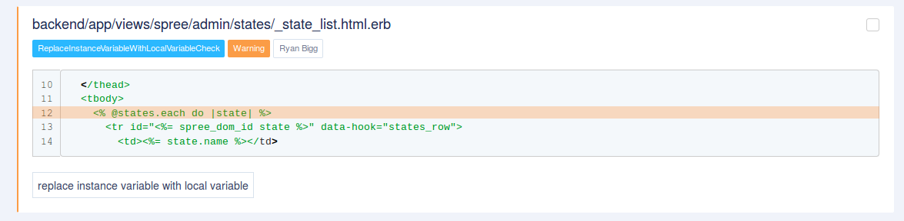
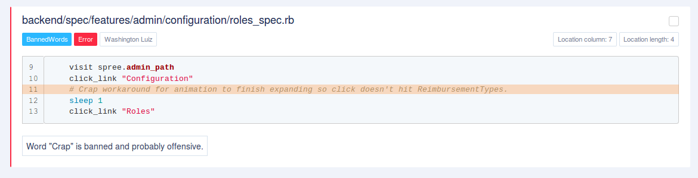
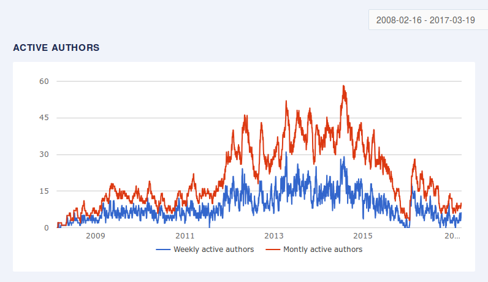
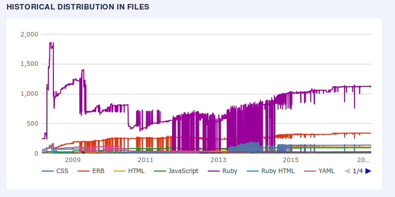
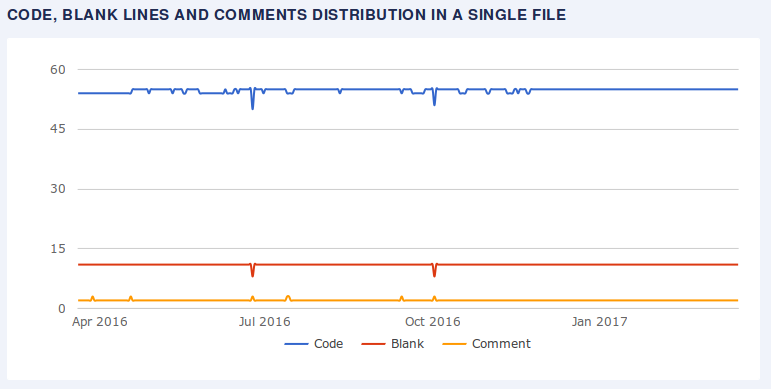
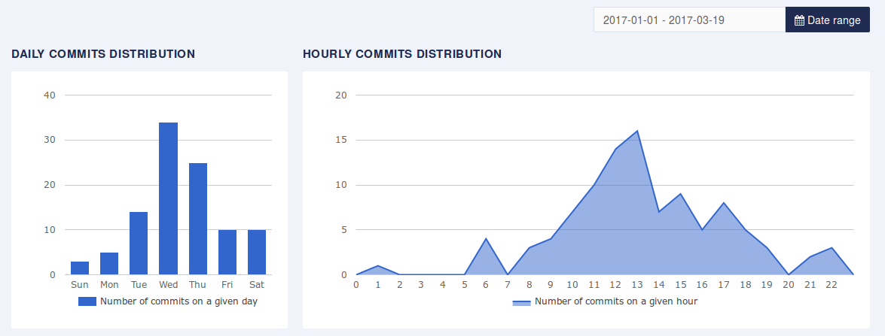
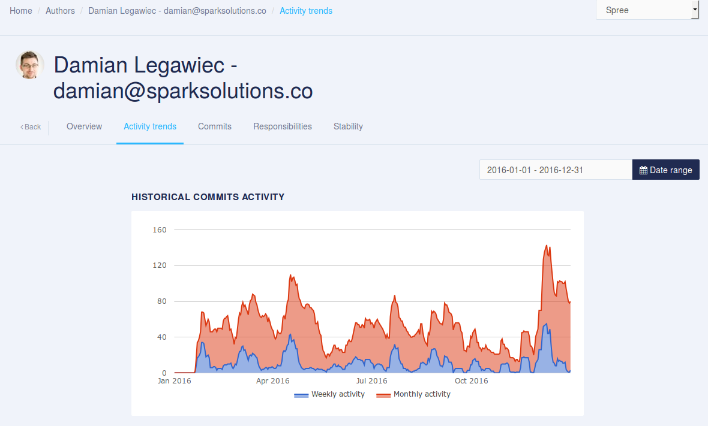

Fun facts about Spree
(and Damian Legawiec)
A bit of numbers
- 3 026 876 bytes of code
- 0.63% monthly growth
- 104594 lines of code
- 75.9% code in Ruby
- 4 guys handling more than 92% of code (last month)
- 1 guy with > 50% of current code base (total) ownership - Sean Schofield

Spree uses Rubocop!
But it doesn't! :(
AccessorMethodName ActionFilter Alias ArrayJoin AsciiComments AsciiIdentifiers Attr BlockNesting CaseEquality CharacterLiteral ClassAndModuleChildren ClassLength ClassVars ColonMethodCall CommentAnnotation CyclomaticComplexity Delegate DeprecatedHashMethods Documentation DoubleNegation EachWithObject EmptyLiteral Encoding EvenOdd FileName FlipFlop SpecialGlobalVars StringLiterals VariableInterpolation TrailingCommaInLiteral
But it doesn't! :(
FormatString GlobalVars GuardClause IfUnlessModifier IfWithSemicolon InlineComment Lambda LambdaCall LineEndConcatenation MethodLength ModuleFunction NegatedIf NegatedWhile Next NilComparison Not NumericLiterals OneLineConditional OpMethod ParameterLists PercentLiteralDelimiters PerlBackrefs Proc RaiseArgs RegexpLiteral SelfAssignment SingleLineBlockParams SingleLineMethods SignalException
But it doesn't! :(
TrailingCommaInArguments TrivialAccessors VariableInterpolation WhenThen WhileUntilModifier WordArray AmbiguousOperator AmbiguousRegexpLiteral AssignmentInCondition ConditionPosition DeprecatedClassMethods ElseLayout HandleExceptions InvalidCharacterLiteral LiteralInCondition LiteralInInterpolation Loop ParenthesesAsGroupedExpression RequireParentheses UnderscorePrefixedVariableName Void
So what would happen with a non-agressive Rubocop config?
(with Rubocop Rspec and Rubocop Rails)

Longest living offense (not only Rubocop?)
Almost 9 years
(Thu, 03 Jul 2008 20:31:17 CEST +02:00)

But there are great things as well!
No curses in source code (almost)!
But code is not everything!
Hype?
File distribution from 2008
Mistake?
No. They used to use Github in a really... interesting way :D
But it's not that bad now
Stable :)
It's not an open-source open-source anymore
Damian are you here?
Y U mostly merging?
283 merges / 267 non-merge commits
U like stylesheets don't you?
core/.../shared/_base_mailer_stylesheets.html.erb (777 eloc)
guides/content/release_notes/3_2_0.md (279 eloc)
guides/content/release_notes/3_1_0.md (134 eloc)
frontend/app/assets/images/logo/spree_50.png (126 eloc)
guides/Gemfile.lock (115 eloc)
api/.../spree/api/v1/tags_controller_spec.rb (102 eloc)
README.md (90 eloc)
guides/static/images/logo.png (88 eloc)
spree_logo.png (81 eloc)
guides/content/release_notes/3_3_0.md (64 eloc)